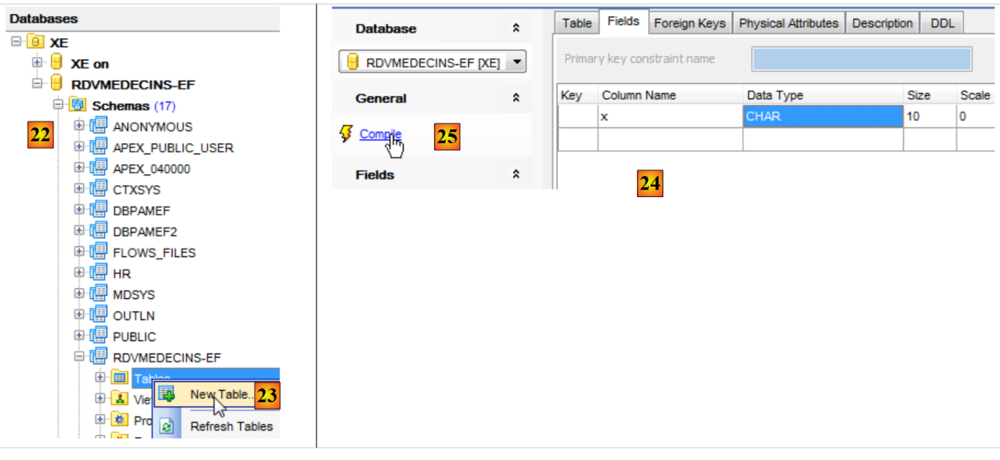
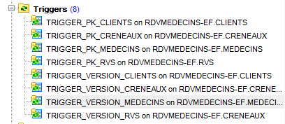
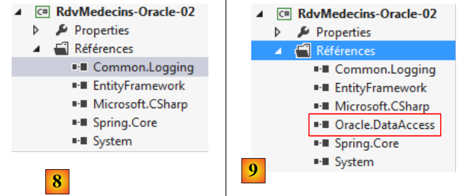

5. Casestudy met Oracle Database Express Edition 11g Release 2
5.1. Installatie van de tools
De volgende tools moeten worden geïnstalleerd:
- de SGBD: [http://www.oracle.com/technetwork/products/express-edition/downloads/index.html];
- een beheertool: EMS SQL Manager for Oracle Freeware [http://www.sqlmanager.net/fr/products/oracle/manager/download];
- een Oracle-client voor .NET: ODAC 11.2 Release 5 (11.2.0.3.20) met Oracle Developer Tools voor Visual Studio: [http://www.oracle.com/technetwork/developer-tools/visual-studio/downloads/index.html].
In de volgende voorbeelden heeft de gebruiker ‘system’ het wachtwoord ‘system’.
Laten we Oracle [1] starten en vervolgens de tool [SQL Manager Lite for Oracle], waarmee we SGBD en [2] gaan beheren.
 |
- in [3] maken we verbinding met een bestaande database;
 |
- in [4] gebruiken we de Oracle-service XE om verbinding te maken;
- in [5] geven we de naam van de database XE op;
- in [6] loggen we in als system / system;
- in [7] sluit u de wizard af;
 |
- in [8] logt u in op de database;
- in [9] is men ingelogd;
- omdat we zijn ingelogd als de gebruiker system / system, die uitgebreide rechten heeft, kunnen we bijvoorbeeld de gebruikers beheren in [10];
 |
- in [11] maken we een nieuwe gebruiker aan;
- in [12], deze krijgt de naam [RDVMEDECINS-EF];
- in [13], en krijgt het wachtwoord rdvmedecins;
- in [14] wordt het aanmaken van de gebruiker bevestigd;
- in [15] is de gebruiker aangemaakt;
 |
- in [16] is de gebruiker [RDVMEDECINS-EF] tevens een databaseschema;
- in [17] heeft de gebruiker zoals deze is aangemaakt onvoldoende rechten. We verlenen hem deze via een script SQL;
 |
- in [18] wordt het script uitgevoerd;
- in [19] gaan we proberen in te loggen onder de identiteit van [RDVMEDECINS-EF] om te zien wat hij kan doen. Hiervoor beginnen we met het aanmaken van een nieuwe database in [EMS Manager];
 |
- in [19] loggen we in via de service XE;
- in [20] loggen we in onder de identiteit RDVMEDECINS-EF / rdvmedecins;
- in [21] wordt een alias opgegeven die de naam van de aangemelde gebruiker weergeeft;
- in [22] logt men in bij Oracle met de opgegeven gegevens;
 |
 |
- in [22] is de verbinding tot stand gebracht;
- in [23] proberen we een tabel aan te maken in het schema [RDVMEDECINS-EF];
- in [24] wordt een willekeurige tabel gedefinieerd;
- in [25] wordt de definitie gevalideerd;
 |
- in [26] is de tabel aangemaakt. We verwijderen deze;
- in [27] is deze verwijderd.
Nu we een gebruiker hebben met voldoende rechten, gaan we het project VS 2012 aanmaken, dat de tabellen van het schema [RDVMEDECINS-EF] zal aanmaken op basis van de entiteitsdefinities.
5.2. De database aanmaken op basis van de entiteiten
We beginnen met het dupliceren van de projectmap [RdvMedecins-SqlServer-01] naar [RdvMedecins-Oracle-01] en [1]:
 |
- naar [2], in VS 2012 verwijderen we het project [RdvMedecins-SqlServer-01] uit de oplossing;
 |
- in [3] is het project verwijderd;
- in [4] voegen we er een ander aan toe. Dit project is opgenomen in de map [RdvMedecins-Oracle-01] die we eerder hebben aangemaakt;
 |
- in [5] heet het geladen project [RdvMedecins-SqlServer-01];
- in [6], wijzigen we de naam in [RdvMedecins-Oracle-01]
 |
- in [7] wordt er nog een project aan de oplossing toegevoegd. Dit project is afkomstig uit de map [RdvMedecins-SqlServer-01] van het project dat we eerder uit de oplossing hebben verwijderd;
- in [8] is het project [RdvMedecins-SqlServer-01] weer aan de oplossing toegevoegd.
Het project [RdvMedecins-Oracle-01] is identiek aan het project [RdvMedecins-SqlServer-01]. We moeten enkele wijzigingen aanbrengen. In [App.config] gaan we de verbindingsstring aanpassen en het project [DbProviderFactory] moeten we aanpassen aan elk project SGBD.
<!-- verbindingsstring voor de database -->
<connectionStrings>
<add name="monContexte" connectionString="Data Source=(DESCRIPTION=(ADDRESS_LIST=(ADDRESS=(PROTOCOL=TCP)(HOST=localhost)(PORT=1521)))(CONNECT_DATA=(SERVER=DEDICATED)(SERVICE_NAME=XE)));User Id=RDVMEDECINS-EF;Password=rdvmedecins;" providerName="Oracle.DataAccess.Client" />
</connectionStrings>
<!-- de factory provider -->
<system.data>
<DbProviderFactories>
<remove invariant="Oracle.DataAccess.Client" />
<add name="Oracle Data Provider for .NET" invariant="Oracle.DataAccess.Client" description="Oracle Data Provider for .NET" type="Oracle.DataAccess.Client.OracleClientFactory, Oracle.DataAccess, Version=4.112.3.0, Culture=neutral, PublicKeyToken=89b483f429c47342" />
</DbProviderFactories>
</system.data>
- regel 3: de gebruiker en zijn wachtwoord;
- regels 6-11: de DbProviderFactory. Regel 9 verwijst naar een DLL [Oracle.DataAccess] die we niet hebben. We verkrijgen deze met NuGet [1]:
 |
- in [2] typ je in het zoekveld het trefwoord oracle;
- bij [3] kies je het juiste pakket [Oracle Data Provider]. Dit is de Oracle-connector ADO.NET;
 |
- in [4], de toegevoegde referentie;
- in [5], in [App.config] moet de juiste versie van DLL worden ingevuld. Deze is te vinden in de eigenschappen ervan.
In het bestand [Entites.cs] moet het schema van de tabellen die worden gegenereerd, worden aangepast. Het gebruikte schema is de naam van de gebruiker die eigenaar is van de tabellen.
[Table("MEDECINS", Schema = "RDVMEDECINS-EF")]
public class Medecin : Personne
{...}
[Table("CLIENTS", Schema = "RDVMEDECINS-EF")]
public class Client : Personne
{...}
[Table("RVS", Schema = "RDVMEDECINS-EF")]
public class Rv
{...}
[Table("CRENEAUX", Schema = "RDVMEDECINS-EF")]
public class Creneau
{...}
We configureren de uitvoering van het project:
 |
- in [1] geven we de assembly die gegenereerd gaat worden een andere naam;
- in [2], evenals een andere standaardnaamruimte;
- in [3] geven we het uit te voeren programma aan.
In dit stadium zijn er geen compilatiefouten. Laten we het programma [CreateDB_01] uitvoeren. We krijgen de volgende uitzondering:
We herinneren ons dat we dezelfde fout hadden met MySQL. Dit heeft te maken met het type van het veld Timestamp in de entiteiten. We brengen dezelfde wijziging aan. In de entiteiten vervangen we de drie regels
[Column("TIMESTAMP")]
[Timestamp]
public byte[] Timestamp { get; set; }
door de volgende:
[ConcurrencyCheck]
[Column("VERSIONING")]
public int? Versioning { get; set; }
We wijzigen dus het type van de kolom van byte[] naar int?. We herinneren ons dat zowel voor SQL Server als voor MySQL de kolom in de tabellen die diende om de toegangsconcurrentie te beheren, een waarde uit SGBD ontving telkens wanneer een rij werd ingevoegd of gewijzigd. Vanaf nu gaan we een entiteitsveld gebruiken dat een geheel getal is. In de SGBD gebruiken we opgeslagen procedures om dit geheel getal met één te verhogen telkens wanneer een rij wordt ingevoegd of gewijzigd.
We voeren de bovenstaande wijziging door voor de vier entiteiten en voeren de toepassing vervolgens opnieuw uit. We krijgen dan de volgende foutmelding:
Regel 1 geeft aan dat de Oracle-connector ADO.NET de bestaande database niet kan verwijderen. Laten we nog eens bekijken wat er gebeurt. De code van [CreateDB_01.cs] is als volgt:
using System;
using System.Data.Entity;
using RdvMedecins.Models;
namespace RdvMedecins_01
{
class CreateDB_01
{
static void Main(string[] args)
{
// de database wordt aangemaakt
Database.SetInitializer(new RdvMedecinsInitializer());
using (var context = new RdvMedecinsContext())
{
context.Database.Initialize(false);
}
}
}
}
Regel 15 activeert de uitvoering van de klasse [RdvMedecinsInitializer] (regel 12). Deze luidt als volgt:
public class RdvMedecinsInitializer : DropCreateDatabaseAlways<RdvMedecinsContext>
Deze is afgeleid van de klasse [DropCreateDatabaseAlways], die probeert de database te verwijderen en vervolgens opnieuw aan te maken. We wijzigen de definitie van de klasse in:
public class RdvMedecinsInitializer : CreateDatabaseIfNotExists<RdvMedecinsContext>
De database wordt alleen aangemaakt als deze nog niet bestaat. We voeren [CreateDB_01.cs] opnieuw uit en nu zijn er geen fouten meer. Maar in [EMS Manager] zien we dat de database [RDVMEDECINS-EF] leeg is gebleven. Omdat EF 5 een bestaande database heeft gevonden, heeft het niets gedaan. Het voert alleen iets uit als de database niet bestaat. Vanaf dat moment draaien we in een vicieuze cirkel. De verbindingsstring voor SGBD is namelijk als volgt:
<connectionStrings>
<add name="monContexte" connectionString="Data Source=(DESCRIPTION=(ADDRESS_LIST=(ADDRESS=(PROTOCOL=TCP)(HOST=localhost)(PORT=1521)))(CONNECT_DATA=(SERVER=DEDICATED)(SERVICE_NAME=XE)));User Id=RDVMEDECINS-EF;Password=rdvmedecins;" providerName="Oracle.DataAccess.Client" />
</connectionStrings>
Op regel 2 gebruikt de verbindingsstring niet de naam van een database, maar de naam van een gebruiker. Deze moet bestaan.
We moeten de database [RDVMEDECINS-EF] dus handmatig aanmaken met de tool [EMS Manager for Oracle]. We beschrijven niet alle stappen, maar alleen de belangrijkste.
De Oracle-database ziet er als volgt uit:
De tabellen
 |
De verschillende tabellen hebben dezelfde primaire en vreemde sleutels als in de twee voorgaande voorbeelden. De vreemde sleutels hebben met name de attributen ON, DELETE en CASCADE.
De sequenties
Hier zijn Oracle-sequenties aangemaakt. Dit zijn generatoren voor opeenvolgende getallen. Er zijn er 5: [1].
 |
- tot en met [2] zien we de eigenschappen van de reeks [SEQUENCE_CLIENTS]. Deze genereert opeenvolgende getallen met een stap van 1, beginnend bij 1 tot een zeer grote waarde.
Alle reeksen zijn volgens hetzelfde patroon opgebouwd.
- [SEQUENCE_CLIENTS] wordt gebruikt om de primaire sleutel van de tabel [CLIENTS] te genereren;
- [SEQUENCE_MEDECINS] wordt gebruikt om de primaire sleutel van de tabel [MEDECINS] te genereren;
- [SEQUENCE_CRENEAUX] wordt gebruikt om de primaire sleutel van de tabel [CRENEAUX] te genereren;
- [SEQUENCE_RVS] wordt gebruikt om de primaire sleutel van de tabel [RVS] te genereren;
- [SEQUENCE_VERSIONS] wordt gebruikt om de waarden van de kolommen [VERSIONING] van alle tabellen te genereren.
De triggers
Een trigger is een procedure die door de SGBD wordt uitgevoerd vóór of na een gebeurtenis (invoegen, wijzigen, verwijderen) in een tabel. We hebben er 8 [1]:
 |
Laten we eens kijken naar de code van de trigger die de primaire sleutel van de tabel [CLIENTS] vult:
- regels 1-5: vóór elke bewerking INSERT op de tabel [CLIENTS];
- regel 6: de kolom [ID] krijgt de volgende waarde uit de reeks [SEQUENCE_CLIENTS]. De primaire sleutel krijgt zo opeenvolgende waarden die door de reeks worden geleverd.
De triggers [TRIGGER_PK_MEDECINS, TRIGGER_PK_CRENEAUX, TRIGGER_PK_RVS] werken op dezelfde manier.
Laten we eens kijken naar de code DDL van de trigger [TRIGGER_VERSIONS_CLIENTS] die de kolom [VERSIONING] van de tabel [CLIENTS] vult:
- regels 1-2: vóór elke bewerking INSERT of UPDATE op de tabel [CLIENTS];
- regel 8: de kolom [VERSIONING] krijgt de volgende waarde uit de reeks [SEQUENCE_VERSIONS]. De kolom [VERSIONING] krijgt zo opeenvolgende waarden uit de reeks.
De triggers [TRIGGER_VERSION_MEDECINS, TRIGGER_VERSION_CRENEAUX, TRIGGER_VERSION_RVS] werken op dezelfde manier. De vier kolommen [VERSIONING] halen hun waarden uit dezelfde sequentie.
Het script voor het genereren van de tabellen van de Oracle-database [RDVMEDECINS-EF] is in de map [RdvMedecins / databases / oracle] geplaatst. De lezer kan dit laden en uitvoeren om zijn tabellen aan te maken.
Zodra dit is gebeurd, kunnen de verschillende programma’s van het project worden uitgevoerd. Ze leveren dezelfde resultaten op als met SQL Server, behalve het programma [ModifyDetachedEntities], dat om dezelfde reden crasht als bij MySQL. Het probleem wordt op dezelfde manier opgelost. Het volstaat om het programma [ModifyDetachedEntities] uit het project [RdvMedecins-MySQL-01] naar het project [RdvMedecins-Oracle-01] te kopiëren. Dan ontstaat er een nieuw probleem:
- regels 1-4: de losgekoppelde client is inderdaad bijgewerkt;
- regel 6: een bekende uitzondering. Deze treedt op wanneer men een entiteit wil wijzigen zonder over de juiste versie te beschikken. In dit geval wilden we de entiteit echter niet wijzigen, maar verwijderen:
// entiteit buiten context verwijderen
using (var context = new RdvMedecinsContext())
{
// hier hebben we een nieuwe lege context
// we plaatsen client1 in de context in de status ‘verwijderd’
context.Entry(client1).State = EntityState.Deleted;
// de context wordt opgeslagen
context.SaveChanges();
}
EF 5 weigerde client1 uit de database te verwijderen, omdat client1 (regel 6) niet dezelfde versie had. Dit probleem was niet opgetreden bij MySQL. Geleidelijk aan merken we dat de connectoren ADO.NET van verschillende SGBD-entiteiten kleine verschillen vertonen. We corrigeren dit als volgt:
using (var context = new RdvMedecinsContext())
{
// hier hebben we een nieuwe lege context
// we plaatsen client1 in de context om deze te verwijderen
context.Clients.Remove(context.Clients.Find(client1.Id));
// de context wordt opgeslagen
context.SaveChanges();
}
en het werkt.
5.3. Meerlaagse architectuur op basis van EF 5
We keren terug naar onze casestudy die in paragraaf 2, pagina 7, wordt beschreven.
 |
We beginnen met het opzetten van de gegevenslaag [DAO]. Hiervoor dupliceren we het consoleproject VS 2012 [RdvMedecins-SqlServer-02] in [RdvMedecins-Oracle-02] [1]:
 |
- naar [2], en verwijderen we het project [RdvMedecins-SqlServer-02];
 |
- in [3] voegen we een bestaand project toe aan de oplossing. We halen het uit de map [RdvMedecins-Oracle-02] die zojuist is aangemaakt;
- in [4] heeft het nieuwe project dezelfde naam als het verwijderde project. We gaan de naam wijzigen;
 |
- in [5] hebben we de naam van het project gewijzigd;
- in [6], we wijzigen enkele eigenschappen ervan, zoals hier de naam van de assembly;
- in [7] wordt de map [Models] verwijderd en vervangen door de map [Models] van het project [RdvMedecins-Oracle-01]. De twee projecten delen namelijk dezelfde sjablonen.
 |
- in [8], de huidige projectreferenties;
- in [9] is de Oracle-connector ADO.NET toegevoegd met de tool NuGet.
In het bestand [App.config] worden de gegevens uit de SQL-serverdatabase vervangen door die uit de Oracle-database. Deze zijn te vinden in het bestand [App.config] van het project [RdvMedecins-Oracle-01]:
<!-- verbindingsstring naar de database -->
<connectionStrings>
<add name="monContexte" connectionString="Data Source=(DESCRIPTION=(ADDRESS_LIST=(ADDRESS=(PROTOCOL=TCP)(HOST=localhost)(PORT=1521)))(CONNECT_DATA=(SERVER=DEDICATED)(SERVICE_NAME=XE)));User Id=RDVMEDECINS-EF;Password=rdvmedecins;" providerName="Oracle.DataAccess.Client" />
</connectionStrings>
<!-- de factory provider -->
<system.data>
<DbProviderFactories>
<remove invariant="Oracle.DataAccess.Client" />
<add name="Oracle Data Provider for .NET" invariant="Oracle.DataAccess.Client" description="Oracle Data Provider for .NET" type="Oracle.DataAccess.Client.OracleClientFactory, Oracle.DataAccess, Version=4.112.3.0, Culture=neutral, PublicKeyToken=89b483f429c47342" />
</DbProviderFactories>
</system.data>
Ook de door Spring beheerde objecten veranderen. Momenteel hebben we:
<!-- Spring-configuratie -->
<spring>
<context>
<resource uri="config://spring/objects" />
</context>
<objects xmlns="http://www.springframework.net">
<object id="rdvmedecinsDao" type="RdvMedecins.Dao.Dao,RdvMedecins-SqlServer-02" />
</objects>
</spring>
Regel 7 verwijst naar de assembly van het project [RdvMedecins-SqlServer-02]. De assembly is nu [RdvMedecins-Oracle-02].
Nu dit is gebeurd, zijn we klaar om de test van de laag [DAO] uit te voeren. Eerst moeten we ervoor zorgen dat de database wordt gevuld (programma [Fill] van het project [RdvMedecins-Oracle-01]). De test slaagt.
We maken de DLL van het project aan, net zoals we dat hebben gedaan voor het project [RdvMedecins-SqlServer-02], en we verzamelenalle DLL-bestanden van het project in een map [lib] die is aangemaakt in [RdvMedecins-Oracle-02]. Dit worden de referenties voor het webproject [RdvMedecins-Oracle-03] dat hierna volgt.
 |
We zijn nu klaar om de laag [ASP.NET] van onze applicatie te bouwen:
 |
We gaan uit van het project [RdvMedecins-SqlServer-03]. We dupliceren de map van dit project naar [RdvMedecins-Oracle-03] en [1]:
 |
- in [2], met VS 2012 Express voor het web, openen we de oplossing van de map [RdvMedecins-Oracle-03];
- in [3] wijzigen we zowel de naam van de oplossing als de naam van het project;
 |
- in [4], de huidige projectreferenties;
- in [5] verwijderen we deze;
- in [6], om ze te vervangen door verwijzingen naar de DLL die we zojuist hebben opgeslagen in een map [lib] van het project [RdvMedecins-Oracle-02].
Nu hoeven we alleen nog maar het bestand [Web.config] aan te passen. We vervangen de huidige inhoud ervan door de inhoud van het bestand [App.config] uit het project [RdvMedecins-Oracle-02]. Zodra dit is gebeurd, voeren we het webproject uit. Het werkt. Vergeet niet de database te vullen voordat je de webapplicatie uitvoert.